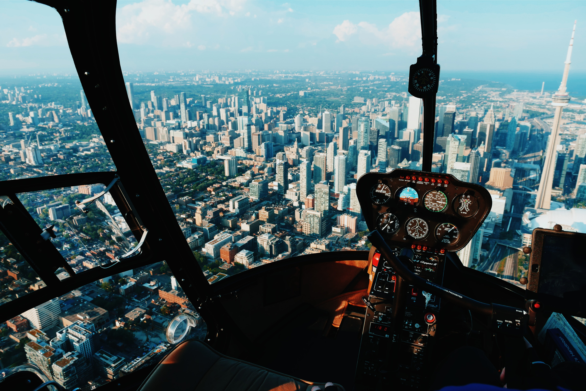
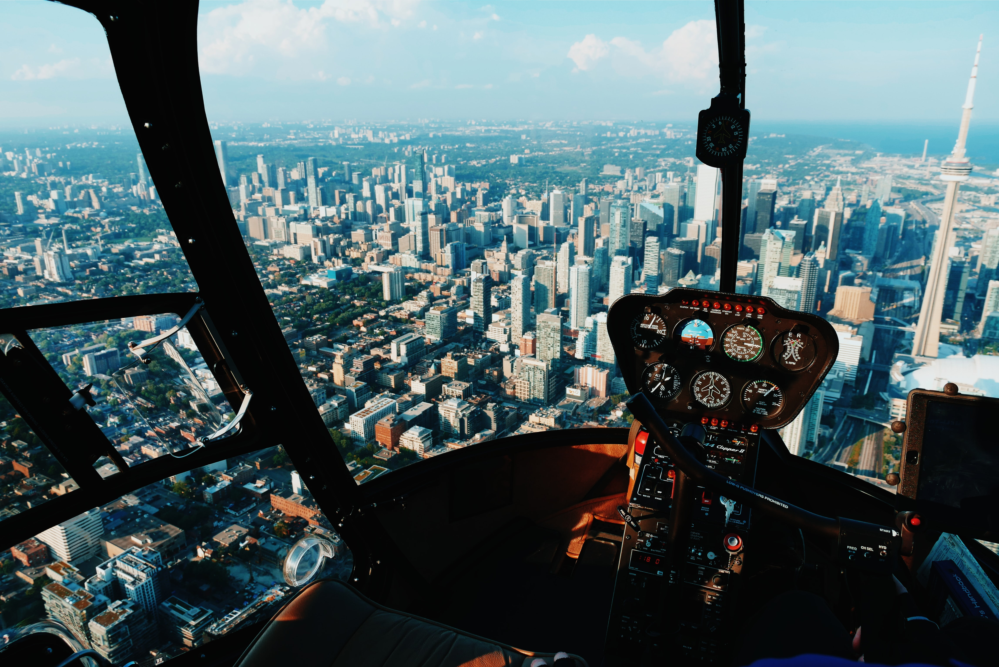

About Me
Projects
Skills
I'm Ben Grutsch! I got my start in transportation, as a bus driver at my university. I went on to work for my local airport doing day-to-day Operations work for nearly five years. After my time at the airport, I went on to Air Traffic Control.
I've always had a passion for learning new things, whether it be how a machine works, how to code, or a new recipe. Web Development became a hobby during the COVID-19 lockdowns and has been a continued interest of mine. I'll always hold my passion for aviation, but in the rest of my free time I enjoy gaming, reading, and playing with my dog, Max!
- Franklin Aerial Photography: fictional business landing page
- A JavaScript 'MadLibs' generator
- A life blog (in progress)
- Looking to add more!
- HTML/CSS
- JavaScript
- Adobe Premiere, Photoshop, Lightroom, After Effects
- Always wanting to learn more!